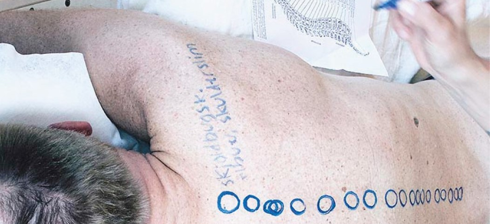

Terapia Individual con enfoque Manuvision
Propuesta concreta

Tienes algún dolor, tensión, ansiedad, estrés o algún otro motivo o emoción que quieras aclarar? ¿O simplemente quieres darte la oportunidad de conectarte contigo otra vez?
Te invito a descubrir estos bloqueos o traumas y disolverlos conmigo, acompañándote a descubrir un camino hacia la relajación y al encuentro de tu propia energía.
Trabajo con la técnica MANUVISION y con técnicas de la psicología profunda como con el 'niño interior' y el trabajo de constelación interna que permiten indagar en el nivel de subconsciencia y el alma.
Solicita una entrevista inicial gratuita.